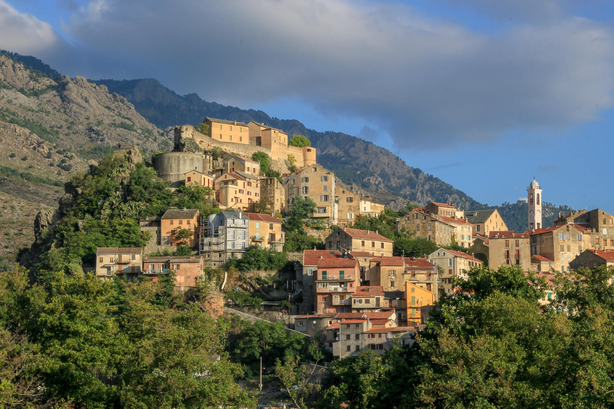
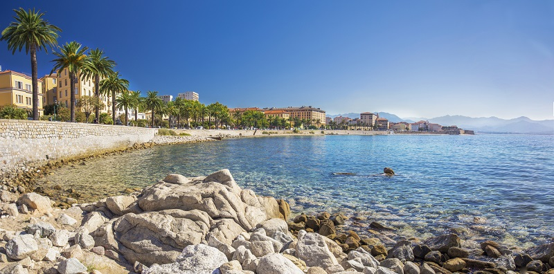
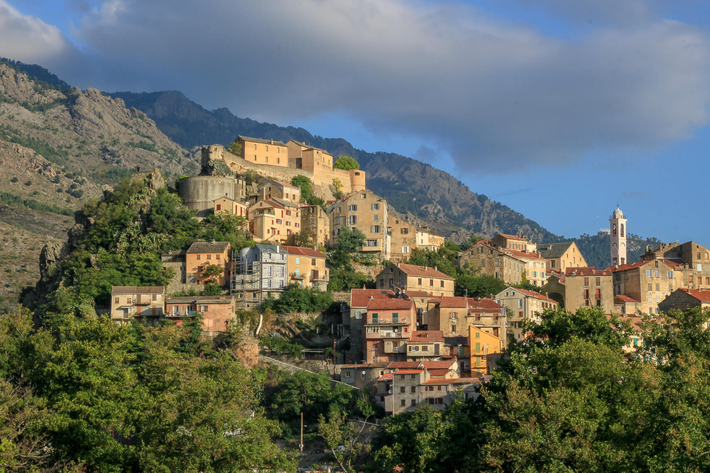
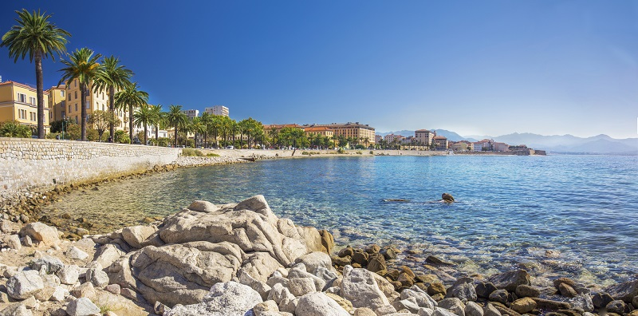

Découvrir l'île de beauté
La Corse (en corse et en italien : Corsica ; en ligure : Còrsega) est une île située en mer Méditerranée et une collectivité territoriale unique française.
Quatrième île de la mer Méditerranée par sa superficie, la Corse a été rattachée durant près de quatre siècles à la République de Gênes avant une brève indépendance comme Royaume de Corse du 15 avril 1736 au mois de décembre 1740. En 1755, elle adopte la première constitution démocratique de l'histoire moderne et donne pour la première fois en partie le droit de vote aux femmes. Le 15 mai 1768, elle est cédée par la République de Gênes à la France, bien que Gênes n'ait qu'une emprise limitée sur l'île depuis la déclaration d'indépendance de la République Corse en 1755. Elle est conquise militairement par le Royaume de France lors de la bataille de Ponte-Novo, le 9 mai 1769.
Département unique à la création des départements en 1790, la Corse est divisée en deux en 1793 avec la création des départements du Golo et du Liamone. Elle redevient partiellement indépendante sous protectorat britannique de 1794 à 1796 avec la création du Royaume anglo-corse. En 1796 la Corse est définitivement française puis réunifiée en 1811 en un unique département, puis de nouveau divisée en 1975 avec la création des départements de Haute-Corse et de Corse-du-Sud. La région Corse est créée en 1982 (en tant que collectivité) et acquiert en 1991, à la suite des revendications locales, un statut de collectivité à statut particulier dénommée « collectivité territoriale de Corse ».
Enfin, depuis le 1er janvier 2018, en application de la loi portant sur la nouvelle organisation territoriale de la République du 7 août 2015, la Corse est devenue une collectivité à statut particulier au sens de l’article 72 de la Constitution, de type collectivité territoriale unique, dénommée « collectivité de Corse », en lieu et place de la collectivité territoriale de Corse et des départements de Corse-du-Sud et de Haute-Corse (en tant que collectivités). Les circonscriptions administratives départementales de Corse-du-Sud et de Haute-Corse, territoires d'exercice des compétences de l'État, restent inchangées, avec les préfectures respectivement à Ajaccio et Bastia.